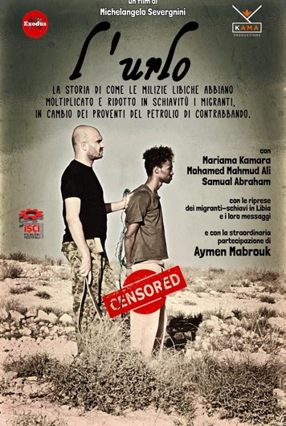

50:54 · 4 OPERE
Solidarietà con il regista Michelangelo Severgnini
Il filo del discorso
Un filmato sulla interruzione di una proiezione diventa occasione per discutere che cosa significhi ascoltare un punto di vista contestato. Dr Divago esprime solidarietà a Michelangelo Severgnini e commenta una registrazione dell’incontro napoletano dedicato a L’Urlo nel novembre 2022. Il suo argomento centrale distingue la possibilità di dissentire o lasciare una sala dalla pretesa di impedire agli altri di vedere e discutere.
Leggi la sintesi completaRiduci la sintesi
Le interruzioni sono frequenti: collega la vicenda alla comunicazione pubblica, alle reazioni emotive e alla differenza fra una negazione senza ragioni e una confutazione verificabile. La corrispondenza Adorno–Kracauer, Marcuse e un libro di Milton Mayer offrono riferimenti alla ferita sociale, al conformismo e al bisogno di confrontarsi con ciò che mette in difficoltà. La scheda mantiene distinta la critica alla interruzione dalla verifica delle tesi del documentario: il solo fatto che una testimonianza sia filmata non garantisce la completezza del montaggio o la esattezza della interpretazione. Le contestazioni successive sul consenso e sul significato dei video sono indicate come tali, senza deciderle attraverso il solo commento del relatore. Non vengono adottati diagnosi, giudizi sulla intelligenza o accuse verso tutte le organizzazioni umanitarie. Il filo conclusivo riguarda il rapporto fra libertà di parola, qualità delle prove e responsabilità nel confronto.
I libri nel discorso

Briefwechsel 1923–1966. Der Riß der Welt geht auch durch mich
Note sul riferimento
Copertina: Briefe und Briefwechsel, volume 7, a cura di Wolfgang Schopf, Suhrkamp, 19 novembre 2008, 772 pagine, ISBN 9783518584965. Corrispondenza 1923–1966, 269 lettere secondo il catalogo. Copertina autentica con i due ritratti, titolo e sottotitolo, non attribuita alla copia del relatore.
Immagine autentica dell’opera, controllata visivamente; l’edizione di riferimento non è attribuita al filmato.
Corrispondenza Adorno–Kracauer e titolo Der Riß der Welt espliciti.

L’Urlo
Note sul riferimento
Locandina del film, distinta dalla copertina del libro omonimo: Locandina autentica del film riprodotta a pagina 20 di Diari di Cineclub n.109, ottobre 2022, in un articolo firmato da Michelangelo Severgnini. Immagine tratta dal documento indicato tra le fonti. La scritta CENSORED è parte della locandina promozionale già pubblicata allora, non un accertamento della scheda. Non copertina del libro L’Urlo. Schiavi in cambio di petrolio, riprodotto separatamente nella stessa pagina; nessun ISBN assegnato al film.
Estrazione del JPEG originale da Diari di Cineclub 109, p.20. Non si afferma di aver visionato integralmente il documentario.
Regista e proiezione25novembre 2022 espliciti; film identificato tramite resoconto dell’autore e locandina della rivista.

L’uomo a una dimensione
Note sul riferimento
Copertina: Einaudi, Piccola Biblioteca Einaudi, 1999
Copertina di un’edizione bibliografica dell’opera, con introduzione di Luciano Gallino. La citazione nel video resta probabile; questa edizione non vi è confermata.
L’uomo a una dimensione e Herbert Marcuse espliciti.

They Thought They Were Free: The Germans, 1933–45
Note sul riferimento
Copertina: Copertina della edizione inglese ampliata University of Chicago Press 2017, con postfazione di Richard J. Evans, ISBN 9780226525839. Il catalogo corrente indica 384 pagine, mentre una pagina di estratto ne indica 368; la differenza non identifica la precisa tiratura del filmato. Prima pubblicazione 1955. La traduzione orale del titolo non dimostra una edizione italiana specifica.
Titolo e autore leggibili sulla copertina originale del sito editoriale; Evans è autore della postfazione, non coautore della inchiesta 1955.
Mayer e titolo They Thought They Were Free espliciti, con traduzione orale pensavano di essere liberi.